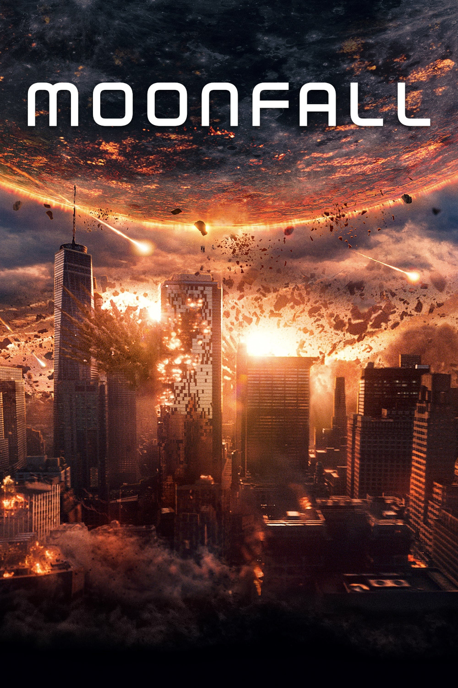

Мировая премьера: 4 февраля 2022
Слоган: Человечеству предстоит столкнуться с тёмной стороной Луны.
Сюжет: Таинственные силы смещают Луну с орбиты, устремляя спутник Земли к нашей планете. Всего за несколько недель до столкновения, когда мир оказывается на грани уничтожения, бывший астронавт, а теперь одна из руководителей НАСА Джо Фаулер, обнаруживает, что у неё есть решение по спасению человечества, но верят ей лишь двое: отставной астронавт Брайан Харпер и сторонник теорий заговора Кей-Си Хаусман. Именно этим не самым очевидным героям предстоит отправиться в отчаянное космическое путешествие, чтобы узнать: наша Луна совсем не такая, как мы считаем.
Режиссёр: Роланд Эммерих
В ролях:
| Патрик Уилсон | Брайан Харпер |
| Хэлли Берри | Джо Фаулер |
| Джон Брэдли | Кей-Си Хаусман |
| Чарли Пламмер | Сонни Харпер |
| Майкл Пенья | Том Лопес |
| Келли Ю | Мишель |
| Каролина Бартчак | Бренда Лопес |
| Эме Иквуакор | Генерал Даг Дэвидсон |
| Дональд Сазерленд | Холденфилд |
| Зейн Малони | Джимми Дэвидсон |
| Стивен Богерт | Директор Альберт Хатчингс |
| Максим Рой | Капитан Габриелла Оклер |
| Азриэль Дэлман | Юный Сонни |
| Ава Уайсс | Никки Лопес |
| Хэйзел Наджент | Лорен Лопес |
Бюджет: $ 150 млн.
Кассовые сборы в США: $ 19 млн.
Кассовые сборы в мире: $ 67 млн.
Продолжительность: 2 ч. 1 мин.
Рейтинг: 5.2